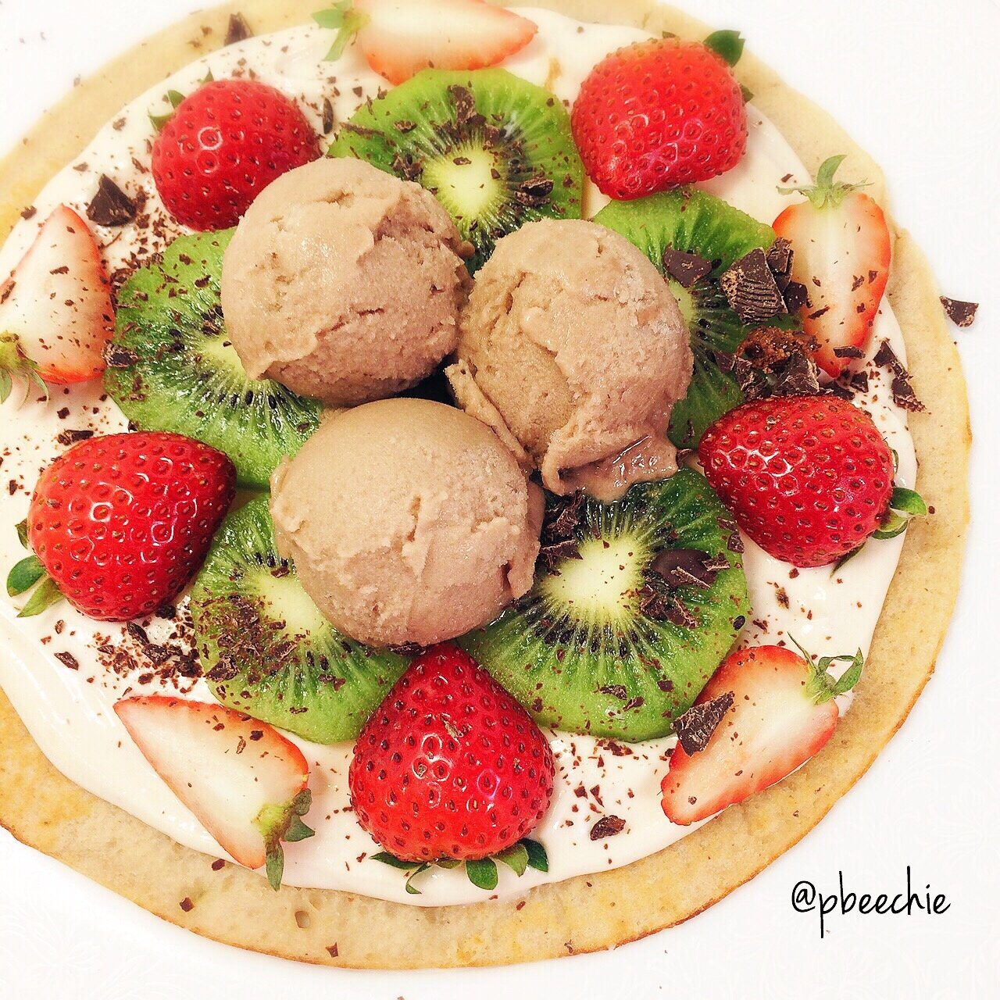

Buckwheat Sweet Pizza

Hey don't fall asleep look at this :DDD. I finally picked up buckwheat flour at the store to try. Aaaaand it's magnificent. I don't know why I've been craving it, because I've never had buckwheat flour, but I've been craving it really bad. I've been interested in it as a gluten free flour option for a while now. With all my blood tests being done and unknown lethargy and pain, I've considered gluten intolerance as an option. So soon I'll be cutting out gluten for a trial period. I'm glad I like this flour because it will make it a very easy transition. Buckwheat dessert pizza topped with a peanut butter protein cream, strawberries, sliced kiwis, shaved sugar-free chocolates, and cocoa dough wink desserts ice cream.
Buckwheat Sweet Pizza
Serves: 1
-
1/3 cup buckwheat flour
-
1/3 cup + 1 TBSP unsweetened almond milk
-
1/3 mashed banana
-
1 stevia packet
-
1/2 tsp baking powder
-
1/2 tsp vanilla extract
Mix all of your ingredients in a bowl. Spray a large pan with nonstick spray. pour the batter in and cook on a low heat for 3-4 minutes. Once the edges start to peel from the pan a bit and lightly brown, flip and cook another 1-2 minutes. Remove from the pan and top it with whatever you want! Have fun with the toppings.
For the protein cream, I mix 1/3 cup plain greek yogurt, 1/3 scoop peanut butter protein powder, and 1 stevia packet. I pretty much always keep a 1 cup yogurt to 1 scoop protein powder ratio when making icing :)